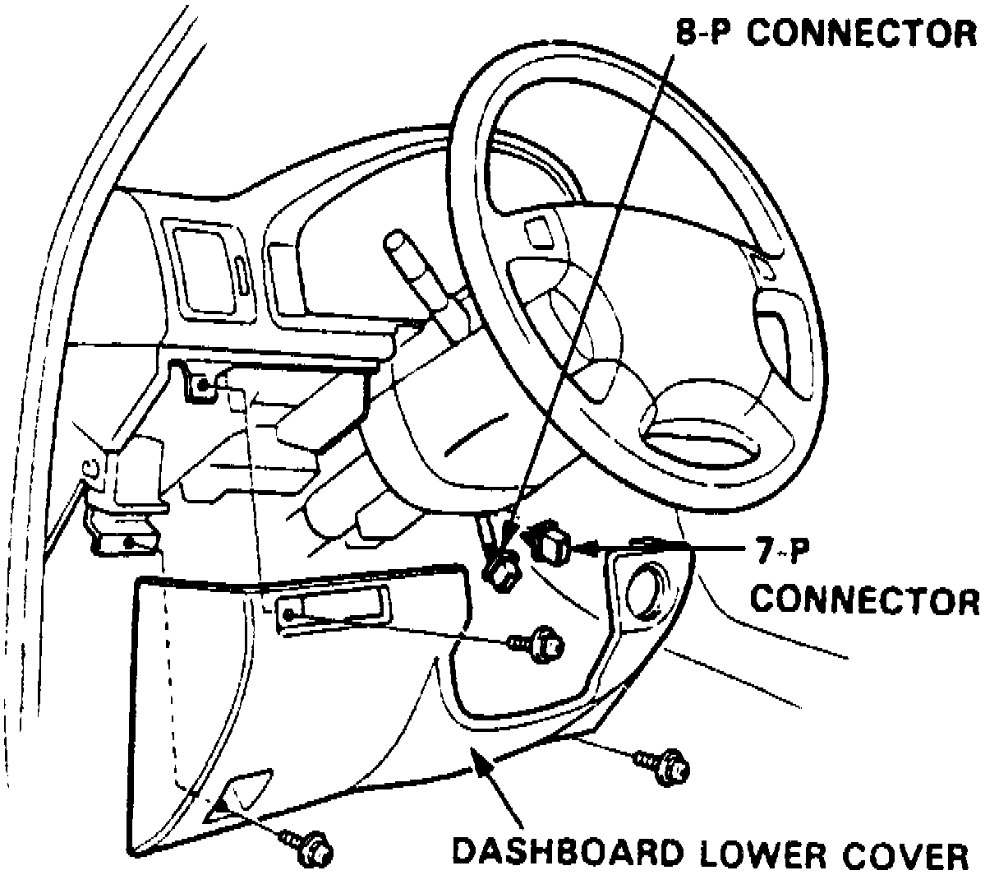
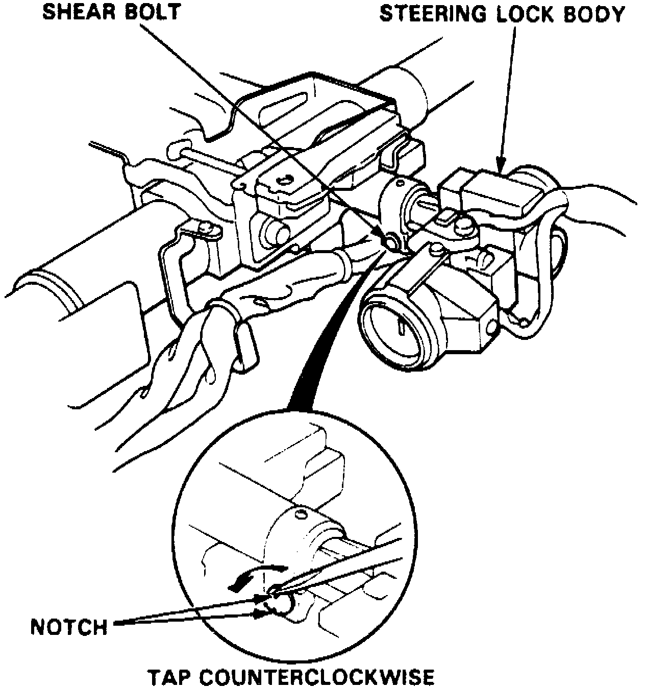
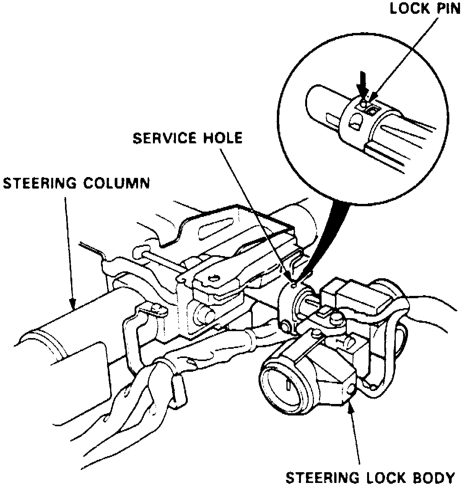

Ignition Lock: Service and Repair
On models equipped with airbag system, refer to Technician Safety Information for system disarming and arming procedures.1. On models equipped with radio coded theft protection system, refer to Vehicle Damage Warnings for system disarming and arming procedures.
Fig. 3 Ignition Switch Connectors:

2. Remove instrument panel lower cover, then disconnect seven and eight pin connectors, Fig. 3.
3. Remove steering column upper and lower covers.
4. Remove column mounting bracket bolts and nuts, then lower steering column.
Fig. 4 Steering Lock Bolt Removal:

5. File a notch into steering lock body shear bolt head, then set tip of chisel or screwdriver into notch and loosen bolt by tapping counterclockwise, Fig. 4.
6. Remove shear bolt from switch body.
Fig. 5 Steering Lock Removal:

7. Insert ignition key and turn switch to I, then push down lock pin and remove steering lock body,
8. Reverse procedure to install, noting the following:
a. Ensure steering lock pin clicks into place.
b. Loosely install new shear lock bolt through knee bolster bracket and ensure steering lock operates properly and ignition key turns freely.
c. Tighten shear bolt until hex head twists off.
9. On models equipped with airbag system, refer to Technician Safety Information for system disarming and arming procedures.
10. On models equipped with radio coded theft protection system, refer to Vehicle Damage Warnings for system disarming and arming procedures.